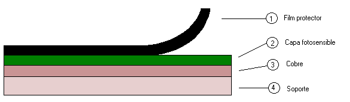

Este film tiene como función proteger de los rayos UV (ultravioleta) la capa fotosensible.
Propiedades fundamentales:
La capa fotosensible tiene un espesor aproximado de 4~6µm (micras), sirve para la protección del cobre frente al agente de grabado que es un ácido.
La capa de cobre tiene un espesor que puede oscilar entre 0,025 y 0,07 mm.
Los materiales más usados son la baquelita y la fibra de vidrio, aunque también existen otros materiales como:
La baquelita (laminado de papel y compuestos fenólicos) es la base más utilizada en equipos de consumo, debido a su coste reducido.
La fibra de vidrio es un compuesto muy utilizado debido a su facilidad de mecanizado y su ligereza. Como inconveniente podemos citar su mala conductividad térmica.
Este compuesto tiene unas características similares a las de la fibra de vidrio pero su conductividad térmica es mucho mayor. El inconveniente de este soporte es su precio, cuatro veces mayor al de la fibra de vidrio.
Este material es el más ligero, pero, a su vez tiene cono inconveniente su difícil mecanizado y es propenso a la absorción de agua.
Las ventajas principales de este material son su conductividad térmica y sus propiedades dieléctricas. Como inconveniente podemos citar la dificultad para mecanizar.
Estos se utilizan en la fabricación de circuitos híbridos y en aplicaciones militares de alta fiabilidad. Como inconveniente tenemos que es un material pesado, frágil y dificil de mecanizar además la implantación de pistas es muy laborioso.
Este material tiene unas características especiales ya que es un material configurable, únicamente variando la proporción de cobre e invar. El inconveniente es que es un material difícil de fabricar y caro.
Es sencilla, rápida y eficaz. A continuación se exponen unos cuantos pasos para su preparación:
Se hace por medio de una fuente de rayos UV, normalmente tubos fluorescentes.
Estos equipos de llaman insoladoras.
Según las características de la fuente (potencia de los tubos), el tiempo de
exposición puede variar entre 2,5 y 4 minutos. Con el tiempo los tubos de UV se
envejecen y van perdiendo eficacia, por lo que puede ser necesario incrementar
los tiempos de exposición (lo más adecuado en estos casos es sustituir los tubos
por unos nuevos).
Procedimiento:
En esta fase vamos a retirar el sobrante de la capa fotosensible, para ello
usaremos una disolución cáustica. Podemos usar un preparado casero o comprar en
cualquier tienda de electrónica un sobrecito con el compuesto
cáustico.
Procedimiento para realizar la disolución de forma casera:
Procedimiento para realizar la disolución con el compuesto comercial:
Procedimiento del revelado:
Si no se respeta la temperatura ni la concentración del revelador, se agrede
anormalmente la capa fotosensible, 1 ó 2 de las 4~6 µm se destruirán, sin que el
fenómeno se pueda controlar visualmente.
En tal caso, las pista ya no estarán
suficientemente protegidas. Una parte del circuito destruida y se podría pensar
que el proceso es la causa del mal estado (lo cual no es cierto).
En general
al principio no somos consientes de un factor primordial: "LA TEMPERATURA DEL
REVELADOR".
En este paso vamos a proceder a retirar el cobre que ha quedado sin la
protección de la capa fotosensible y que como podemos observar es nuestro dibujo
de las pistas.
El grabado se hace por medio de ácido clorhídrico de 16%
estabilizado activado con agua oxigenada 15%. Este proceso puede tardar entre
unos 3 y 5 minutos.
También existe otro tipo de atacado que se realiza con
percloruro férrico, este método es más lento y es recomendable el uso de una máquina de grabar, este método no se explicará en este manual, pero en cualquier tienda
del ramo le explicarán el procedimiento.
Procedimiento para realizar los
ácidos caseros:
Procedimiento para realizar los ácidos comerciales:
Procedimiento de grabado con ácidos caseros:
Procedimiento de grabado con ácidos comerciales:
IMPORTANTE: LA REACCIÓN QUE SE PRODUCE EN EL ATACADO DESPRENDE VAPORES NOCIVOS. SE DEBE DE REALIZAR EN UN CUARTO CON MUCHA VENTILACIÓN.
Una vez terminado el proceso de grabado tendremos que limpiar la capa
fotosensible que cubre el cobre del circuito, para ello podemos usar un algodón
mojado con un poco de alcohol de quemar o en su defecto cualquier disolvente no
abrasivo.
El siguiente paso que nos queda para terminar la placa es el
taladrado para ello usaremos un soporte
vertical donde alojar el taladro.
Los diámetros de las brocas necesarias para
los componentes normalmente serán:
0,3 - 0,4 - 0,5 - 0,6 - 0,7 - 0,8 - 0,9 -
1 - 1,1 - 1,2 mm
{kind=link}
{kind=link}
{kind=link}
{kind=link}
{kind=link}
{kind=link}
{kind=link}
{kind=link}
{kind=link}